MXR Phase 90 Analysis
The Phase 90 is a phaser guitar pedal designed by Keith Barr in 1974. It was the first product sold by MXR with great success. MXR’s contribution to phase-shift effects was the high-quality, small size and reliability of the stompbox, in contrast with previous models that tended to be dodgy, bulky and noisy.
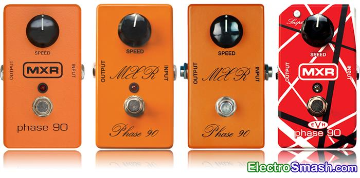
Production ceased when MXR went bankrupt in 1984. Jim Dunlop bought MXR in mid-late 80's, resuming production and adding extra features like LED and external power supply jack.
The old releases by MXR included the so-called Script and Block Logo models. Dunlop nowadays offers few variants: Handwired 1974 Vintage model, Custom Shop Script, MXR M-101 Phase 90 and EVH Eddie Van Halen signature model. This study is focused on the first Script Logo model which is considered to perform the best.
Table of Contents.
1. The Phase Effect.
2. MXR Phase 90 Circuit.
3. Power Supply.
4. Input Stage.
5. Phase Shifting Stage.
5.1 MXR Phase 90 Shifting Unit.
5.2 FET as Variable Resistor / 2N5952 Matching for Phase 90.
5.3 Phase 90 Notches Frequency.
5.4 The R28 Feedback Resistor.
6. Low-Frequency Oscillator.
7. Output Mixer Stage.
8. Interview with Don Morris - MXR Engineer
9. References.
1. The Phase Effect.
A Phaser Effect pedal splits the guitar signal into two copies: the first copy suffers a phase shift of 180° (is inverted) at a certain frequency fphaser, the second copy is the same as the original. Both signals are recombined in a single signal, as a result, a notch (signal cancellation) at fphaser is created.
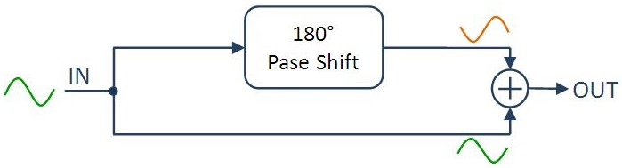
- The notch can be swept up and down through the frequency band, creating a rippling, doppler-like effect.
- The effect is more dramatic by placing more than one notch. MXR Phase45 has 1 notch, Phase90 and Univibe have 2 notches and Phase100 uses 3 variable notches.
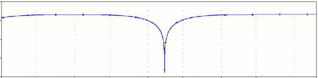
2. MXR Phase 90 Circuit.
The MXR Phase 90 schematic can be broken down into 5 simpler blocks: Power Supply Stage, Input Buffer, Phase Shifting Stage, LFO and Output Mixer Stage.
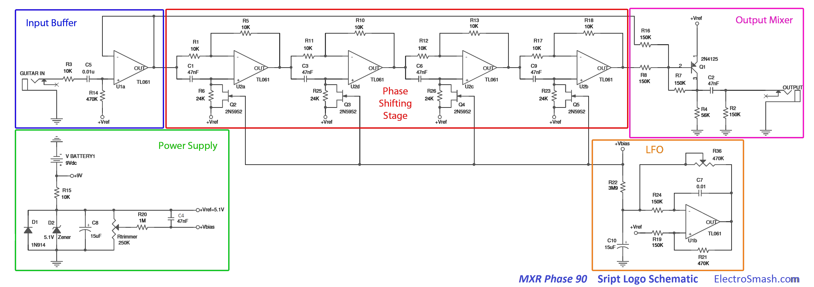
The circuit is designed around a Phase Shifting Stage with an Input Buffer to avoid tone sucking. The last Output Mixer Stage will combine the wet and dry signal in order to create the signal cancellation. The LFO creates the sub-sonic carrier signal that modulates the notches, shifting them among the frequency band.
The MXR Phase 90 modulation is controlled by one knob which set the speed of the effect (frequency of the LFO).
MXR Phase 90 Part List / Bill of Materials.
Although this study covers the Script Logo circuit, the components are labeled following the Block Logo model. The differences between both models are small and in this way, the Block logo can be modded into the Script logo easily.
C1,C2,C3,C4,C6,C9: 47nF
C5: 0.01u
C7: 0.01
C8,C10: 15uF
D1: 1N914
D2: 5.1V Zener
Q1: 2N4125
Q2,Q3,Q4,Q5: 2N5952
Rtrimmer: 250K
R1,R3,R5,R10,R11,R12,R13,R15,R17,R18: 10K
R2,R7,R8,R16,R19,R24: 150K
R4: 56K
R6,R23,R25,R26,R28: 24K
R14,R21,R36: 470K
R20: 1M
R22: 3M9
U1b,U1a,U2d,U2c,U2b,U2a: TL061
MXR Phase 90 Guts / PCB Layout.
The PCB is a single layer board stuffed with op-amps, fets, and passive components. The original MXR and Dunlop layout suffered modifications; the first models used 6 single op-amps while the latest utilize 3 dual op-amps. The layout and jacks/switches placement changed during the different productions. Last models include SMD components and PCB mounted jacks.
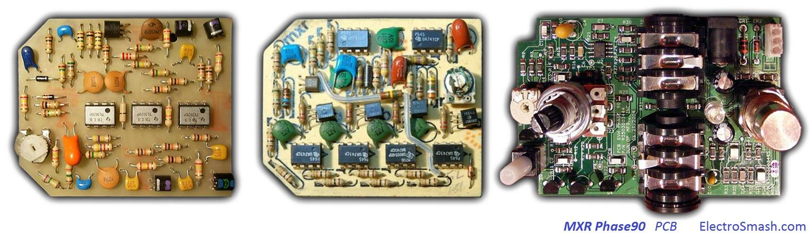
Phase90 Models: This is the summary of the different versions of the Phase 90 circuit.
MXR era:
- Script Logo: using 6 single 741 op-amps by National or TI (like the current MXR CSP-026 '74 Handwired version).
- Block Logo: started with the script logo version PCB inside. During the years some circuit modifications appeared: first revisions include 6 single op-amps later a feedback resistor R28 was added. Finally, the six single op-amps were replaced for three dual op-amps. The LED and the adapter jack were added during the process.
Dunlop era:
First releases started with the last revision of the Block Logo PCB. Again circuit modifications happened: around 1989-1990 the reissue line added an input buffer stage to avoid tone sucking, the PCB layout was completely redone. Improvements also affected the DPDT switch and adapter jack.
- MXR CSP-026 Handwired 1974 Vintage Phase 90 ($119): Reissue of the original 1974 vintage phase pedal, basically a copy of it. It is hand-wired and uses 6 single op-amps like the original 1974 Phase 90 Script Logo. Not true bypass, no LED, no AC connector (runs on a 9V battery).
- MXRCSP-101CL Custom Shop Script Phase 90 ($99): It is a regular '75 block model in a and script-like case, actually the same EVH circuit, with the 24K resistor missing. Not true bypass comes with a LED and AC adapter.
- MXR M-101 Phase 90 ($79): It has the block logo circuit, with feedback resistor and an added buffer stage on the circuit input, to avoid tone sucking. People clip out R28 (the feedback resistor on) to make them sound closer to the script logo versions. Not true bypass comes with a LED and AC adapter.
- MXR EVH Eddie Van Halen Phase 90 ($129): This is signature pedal designed by Dunlop for Eddie Van Halen. It has a script button to toggle into a script circuit or a regular crunchy circuit (switching the R28 feedback resistor). It has a completely redesigned circuit layout, using SMD components. Not true bypass comes with a LED and AC adapter.
Concerning the op-amp, the original MXR Script Logo had a Texas instruments UA741CP single op-amp, next versions with dual op-amps contain the TL062. Any compatible standard op-amp like TL072, TL082, TL022, 4558, etc is suitable for the job.
3. Power Supply.
The Power Supply Stage provides the energy and bias voltage to the circuit.
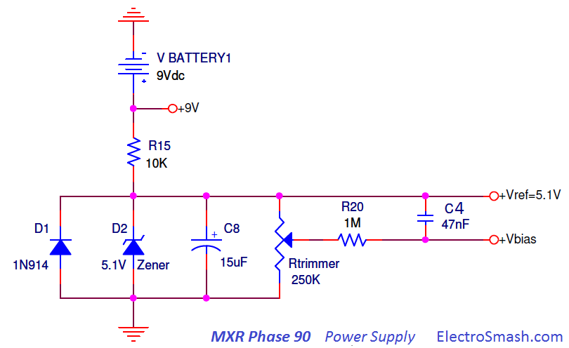
The 9V supply will feed the op-amps. The Zener diode is used to generate a voltage reference of 5.1 volts. The resistor divider Rtrimmer adjusts the bias voltage is to be applied to the Fet's gates.
- The Zener diode D2 is decoupled to ground with a 15uF electrolytic capacitor C8, removing all ripple from the supply line. The 5.1 Vref will be also used as a virtual ground in all op-amp stages.
- Capacitor C4 between supplies also removes noise from the power lines.
- The diode D1 protects the pedal against reverse polarity connections.
4. Input Buffer Stage
The Input Buffer Stage is a buffer op-amp with unitary gain placed to keep high input impedance and avoid tone sucking. It also filters the input humming harmonics with an RC network.
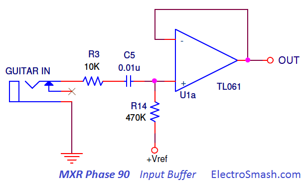
- The 0.01uF cap C5 cap blocks DC and provides simple high pass filtering. (larger values let more bass into the circuit) Humming frequencies below 33Hz will be attenuated, the cut-off frequency can be calculated as:
- The big 470K resistor R14 will bias the input to virtual ground (+Vref = 5.1V).
Input Impedance.
The MXR Phase 90 input impedance can be calculated as:
note: 480K ohms can be considered not bad input impedance, enough to avoid tone sucking. However, in pedal design, the best practice is to keep the input impedance at least at 1 MΩ.
The Phase Shifting Stage is the core of the circuit. It is based on the repetition of the Elementary Shifting Unit. Each of this units will shift the phase of the original signal up to 90°.
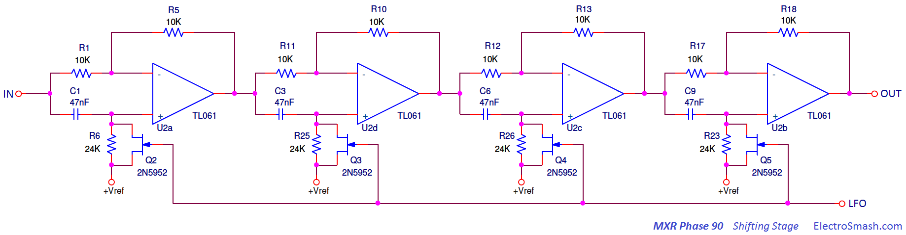
The Elementary Shifting Unit.
It is an RC network fed by a signal V1 at the Capacitor input, and by V2 (V1 inverted or V2 shifted 180°) at the Resistor input.
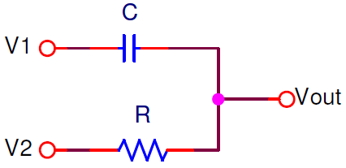
The circuit can be studied as a high pass - low pass filter:
- With V1=source and V2=GND, the shifting RC network is a standard passive high pass filter. With the typical frequency response fcut-off= 1/(2πRC) and phase response Φ=arctang(1/2πfRC).
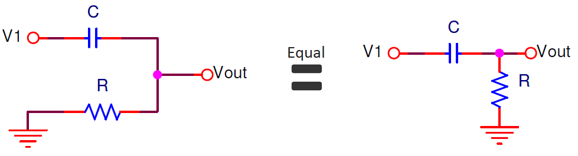
- With V2=source and V1=GND, the shifting RC network is a standard passive low pass filter. With the typical frequency response fcut-off= 1/(2πRC) and phase response Φ=-arctang(2pifrRC).
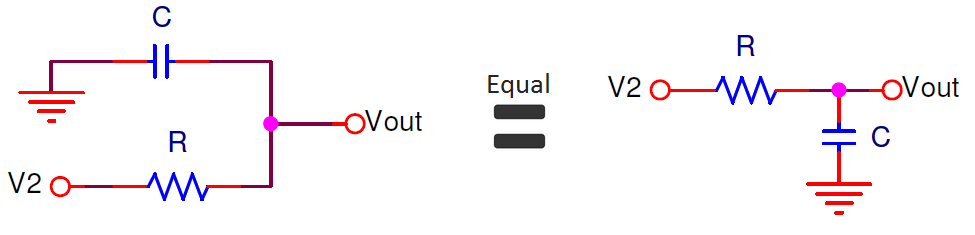
Using superposition the RC circuit is analyzed in 3 steps:
- Apply V1 and make V2=GND.
- Apply V2 and make V1=GND.
- Calculate the response as a sum of the results caused by each independent V1 and V2 sources acting alone. So the output is the sum of step1 + step2.
In the image below the amplitude and phase (Bode Plot) of each step of the superposition analysis are shown. For this example, C=47nF and R=24K with fc=141Hz are used.
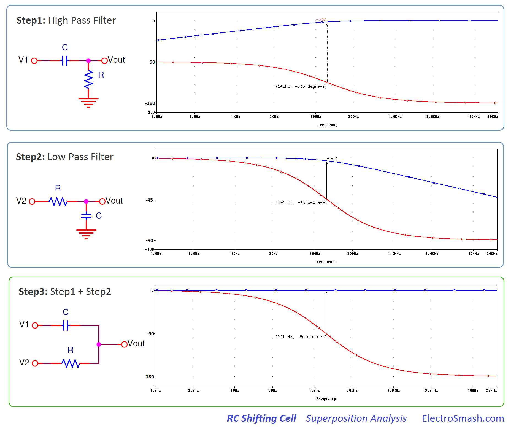
The blue amplitude trace of the total response is constant (step 3), there is no signal attenuation.
The red phase trace at the cut-off frequency is defined as the frequency point where the capacitive reactance and resistance are equal R = XC, the phase shift is 90° following the formula:
note: The phase at fcut-off is not 45° as in a standard passive RC filter but doubled to 90°.
Stringing up two of this RC networks in series, the phase at fphaser will be shifted up to 90°+90°=180° degrees.
If the processed signal (with 180° phase-shift) is added to the original one, the result will be a signal with amplitude cancellation only at fphaser creating a notch at this freq.
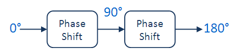
Therefore, adding series pairs of Phase Shifting Units will create more notches: 2 stages = 1 notch, 4 stages = 2 notches and so on. The effect is enhanced if the notches move up and down in frequency, the easiest way is by changing the resistor value of the RC chain.
5.1 MXR Phase 90 Shifting Unit.
Using the Elementary Shifting Unit concept, the Phase 90 uses an inverting operational amplifier with the RC shifter at the (+) input. In the image below the circuit is presented with the signals at the key points. The phase shift of 90° will take place at the fphaser = fcut-off of the RC network.
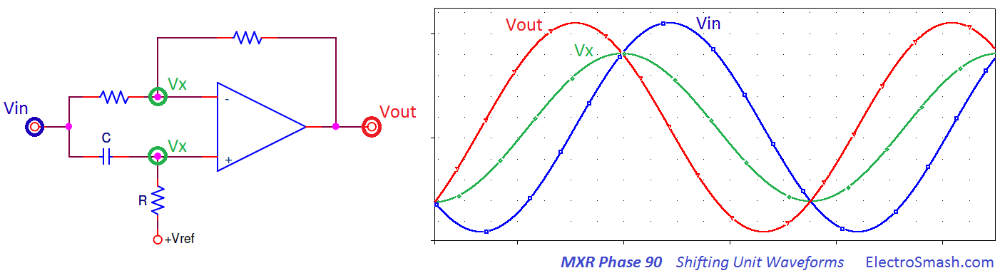
- The Blue waveform Vin is the input signal, for the example a unitary signal is used (module 1, phase 0°).
- The Green waveform VX is the signal at (-) or (+) op-amp inputs. Taking the RC as a standard high pass filter, because +Vref is virtual ground and can be considered as GND point. The fcut-off =1/(2πRC) with a 45° phase and the amplitude is Vin-3dB or in other words 1/√2 (that is why the green waveform is smaller than the blue and the red).
- The Red waveform Vout is the output signal, module 1 and phase +90°.
The mathematics behind the waveforms can be calculated using complex numbers; in an inverting op-amp topology, the output voltage cal be calulated as:
where:
- Vin is module 1 phase 0° or in complex expression: 1cos(0°) + 1sen(0°)j = 1
- VX is module 1/√2 phase 45° or in complex expression:1/√2cos(45°) + 1/√2sen(45°)j = 0.5 + 0.5j
The output is j wich means module 1 and 90° phase.
How to move the notches?
The Phasing guitar effect is accomplished when the notches are shifted up and down in the audio band automatically. This variation is done by modifying the value of R at (+), there are several approaches to do so:
- The early method used in Magnatone Vibrato was to use Varistors (variable resistance depending on the voltage placed across it) not very sensitive and need to be driven by high voltage signals over 20V.
- The OTA Operational Transconductance Amplifier used in EHX Small Stone and Maestro Stage Phaser is an over-complex solution compared to the other solutions.
- The LDR Light Dependent Resistor used on MXR Phase-100 and Univibe is linear and easy to use.
- MXR Phase90 uses a FET as a variable resistor placed in parallel with R. As it will be seen in the next point, the variable resistor value is proportional to the LFO voltage at the FET gate:
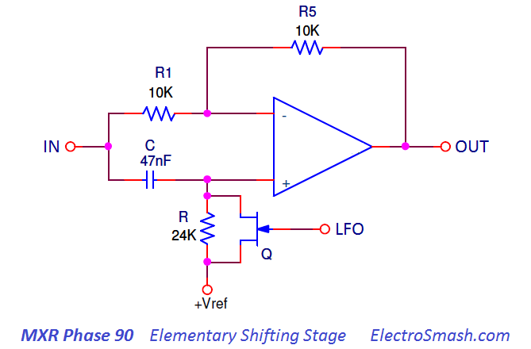
5.2 Using a FET as a Variable Resistor / 2N5952 Matching for Phase 90:
A 2N5952 n-channel FET transistor can be used as a Voltage Controlled Resistor where the resistance value between the Drain and Source terminals (rDS) is controlled by the Gate voltage. The 2N5485 part is also a compatible replacement.
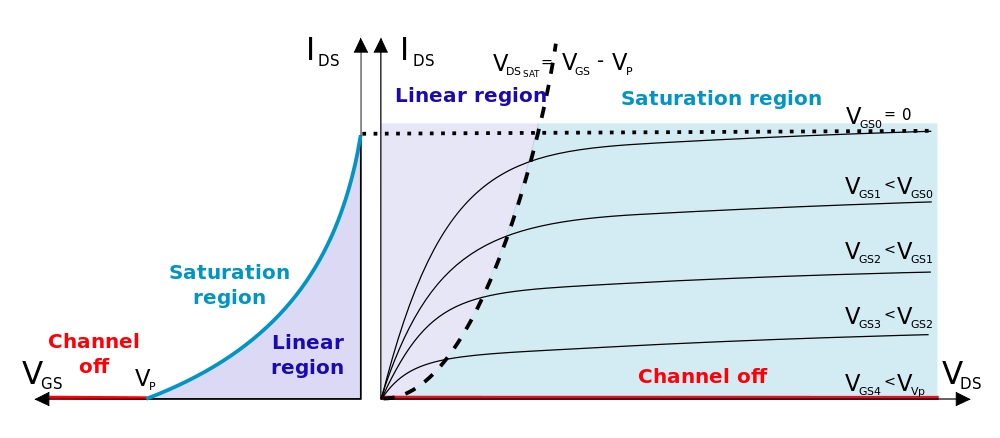
The I-V characteristic graph shows that in Linear Region, the drain-source resistance is controlled only by the gate-source voltage:- If VGS=0: rDS is minimum (rDS=VDS/IDS). It goes to the saturation region.
- If VGS is increased (negatively for n-channel) : rDS value raise.
- If VGS= VGS cut-off or VGS pinch-off : rDS is maximum. It goes to Channel off region.
The VGS cut-off voltages differ from one FET to another from the same manufacturer. The pinch-off occurs at a particular reverse bias (VGS) of the gate-source junction. Due to foundry limitations, it is much harder to make consistent JFETs than to make consistent bipolar devices. The 2N5952 is guaranteed to cut-off completely between -1.3 and -3.5, it is a big margin, making the voltage range to control the FET different between transistors in the same circuit.
The best performance in the Phase 90 is when:
- All the FETs move together: They should have similar cut-off voltage, with a similar curve and rDS to a given VGS. The best way to achieve it is to match the FETs. This procedure is clearly described by RG Keen.
- The rDS sweeps over a wide range of resistance values, so the notches can be shifted around fairly. The VGS cut-off should be as big as possible giving a wider LFO sweep span.
With these premises and assuming that a 5.1V zenner is being used (VG=5.1V), the right biasing of the FET should make the VGS to vary from 0 to VGS cut-off.
- To make VGS = 0, VS = VZENER = 5.1V and VG = 5.1V.
- To make VGS = VGS cut-off, VS = VZENER = 5.1V and VG = 5.1V + Vcut-off, depending on the FET Vcut-off is -1.3 to -3.5V, so VG=3.8 to 1.6V. The safer way is to adjust it close to 3.8 Volts, and the transistor will go to Channel Off region for sure.
The triangular wave generated by the LFO is applied to VG and must be aligned with this bias point using the 250K Rtrimmer.
The rDS values are normally between some hundred ohms to some megaohms. The 22K resistor parallel with the FET will result in a combined resistance smaller than 22K, i.e : (22KΩ // 100Ω)=100Ω and (22KΩ // 2MΩ)= 22KΩ.
5.3 MXR Phase 90 Notches Frequency.
The Phase 90 is based on 4 phase shifting units, creating 2 notches. In order to generate a 180° shifted output, the phase shift is distributed like:
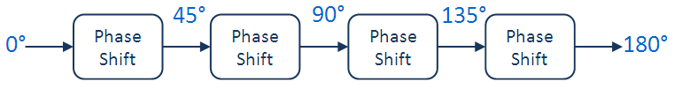
note: there are two possible ways to reach the 180 desired output with 1/4 increments (this is why there are two notches):
- Doing 180°/4=45° increments: 45° - 90° - 135° - 180°.
- Adding 360° and doing the same operation (180°+360°)/4=135° increments: 135° - 270° - 405° - 540°. (540° and 180° have the same phase characteristics).
The frequency where these notches are placed is calculated using the main formula:
Where Φ is the desired phase in each increment (45° or 135°), R=24K and C=47nF.
The frequency response of the MXR Phase-90, with notches at 58Hz and 340Hz:
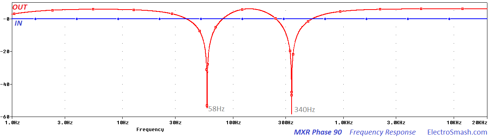
5.4 The R28 Feedback Resistor.
The feedback resistor labeled R28 makes the effect stronger and more pronounced, causing boost and even distortion in the midrange. The first Script Logo units do not include this component, later schematics (Block Logo) added it, finally, the EVH model has an additional potentiometer to adjust the intensity of this factor. Cutting the feedback resistor out makes the Phase 90 more balanced and smooth.
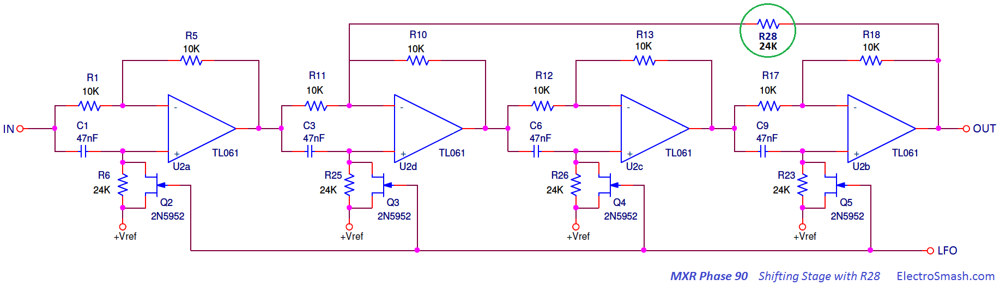
The output signal has two notches where the original and the phased signal have 180 phase difference, creating signal cancellation. At the same time, other frequencies will get the opposite effect, being reinforced when the input and phased waveforms have 0 or 360 phase difference. Feedbacking part of the output signal into the Shifting Stage chain will reinforce keeping the cancellation points.
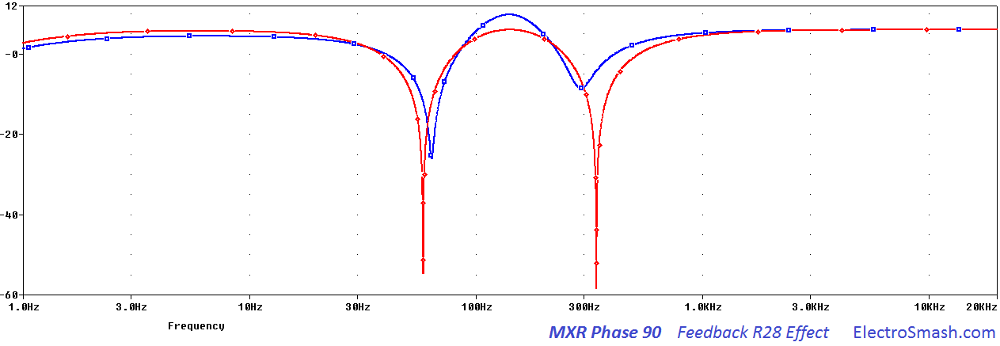
In the graph above the frequency response with (blue) and without (red) R28 is shown. Adding the feedback resistor creates a mid-hump and additional gain.
The feedback can be routed to different phase stage, each stage has a singular phase difference, so the peaks generated have a different voice to each stage. Find below the result of routing back the R28 from the output to the 1st, 2nd (default in MXR Phase 90), 3rd and 4th stage. Each case will result in a different tone response (red trace shows response without R28 and blue trace with R28):

6. Low-Frequency Oscillator.
The Low-Frequency Oscillator generates a triangular sub-audio waveform. The signal will command the phase shifting operation by changing the VG of the FET transistors and therefore the source-drain resistance.
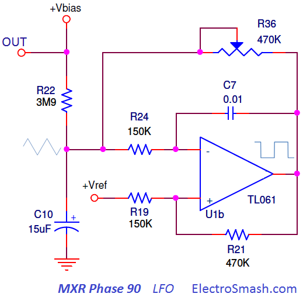
The LFO design is based in a Schmitt Trigger - Integrator modified topology. The cap C7 ramps up and down at a rate which depends on the current going into/out of it as controlled by the R36 speed potentiometer.
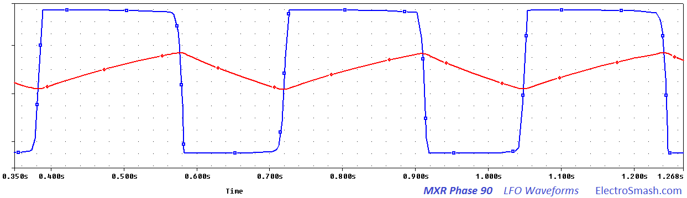
The output of the op-amp creates a square waveform while at the "OUT" point is the triangular LFO signal. The signal can be trimmed from tenths of Hz to some Hertzs as shown below:
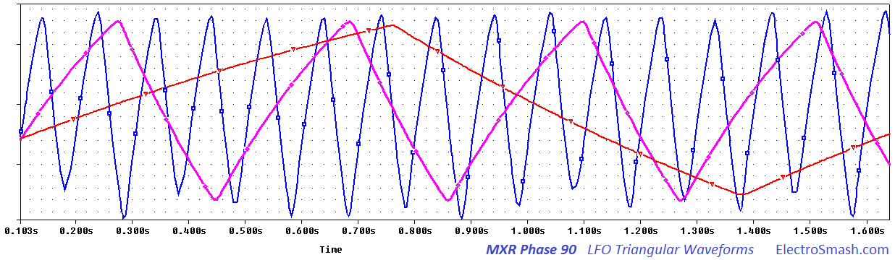
How to bias the Phase 90 LFO:
The variable resistor Rtrimmer helps to adjusts the LFO output to a particular matched set of JFETs for a maximum span.
- If the bias voltage is set too high, the JFETs are all almost off all the time.
- If the bias voltage is set too low, the JFETS are all almost on all the time.
The LFO output swing voltage should be from 5.1V to 3.8V/1.6V (depending on the FET batch cut-off voltage). The usual LFO adjusted output signal is a triangular waveform centered at 4V and with a span of few volts up and down to ensure FET performance.
7. Output Mixer Stage.
The Output Mixer Stage blends the wet and dry signals generating the moving-frequency-notches output. The capacitor C2 also provides additional signal filtering.
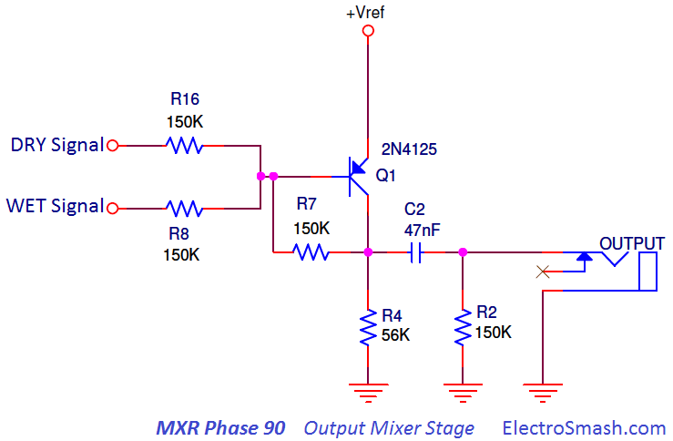
This last stage is a PNP Common Emitter Amplifier. Both signals are applied through the base of Q1, the ratio of R8 and R16 (all same value) indicates that the original and processed signals are mixed at 50%.
- After the transistor amplifier, there is a high pass RC network formed by C2, R2. The cut-off frequency is 22 Hz (1/(2πR2C2), removing humming and DC component from the output and also protecting the circuit against high current loads.
- Later circuit revisions (Block Logo), included a capacitor C11 from base to collector. It is a Miller Capacitor which shapes the high-frequency response (roll-off the highs) providing a dominant pole compensation preventing oscillation.
- Any other PNP transistor like 2N3906, 2N4250, 2N5087 with gain over 200 can replace the 2N4125.
8. Interview with Don Morris - MXR Engineer.
Don Morris is an electronic engineer who joined MXR's Engineering Team back in the spring of 1979. We have published a short interview about how he worked on the Phase 90 re-design, the insides of the company at that time and part of his own story
9. References:
TL062 Datasheet by Texas Instruments.
The Phaser Technology by R.G. Keen.
Phase 90 clone by Tonepad.
Explanation about different MXR Phase 90 models by StinkFoot.
Phase 90 LFO Function in DIYStompboxes.
MXR Phase 90 great Article in Perform-Musician
Difference between Phase, Flanger and Chorus by MakingMusicMag.
All credit to R.G Keen, Mark Hammer, StinkFoot and DIYStompboxes, FreeStompboxes, DIYAudio forums.
My sincere appreciation to M.Guerrero, thanks for your support.
Thanks for reading, all feedback is appreciated
Some Rights Reserved, you are free to copy, share, remix and use all material.
Trademarks, brand names and logos are the property of their respective owners.
Rescued from a 2022 Wayback Machine capture of the original electrosmash.com article, which is no longer online. Some links to pages outside this archive have been removed. The original PDF export of this article is in the pdf backups folder.